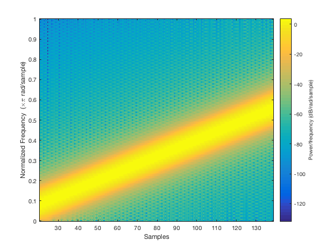
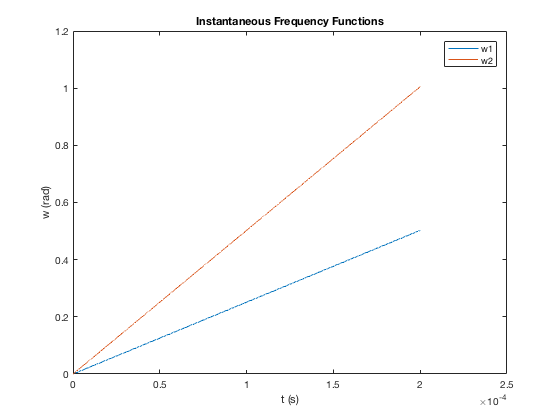
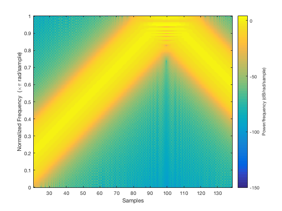
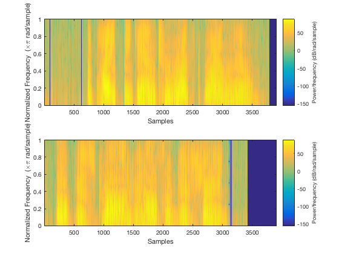
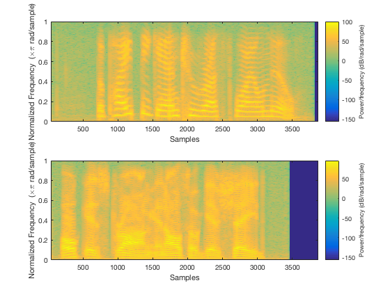
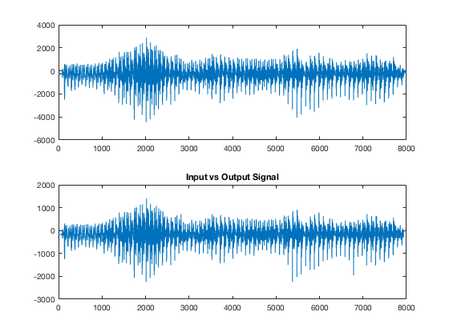
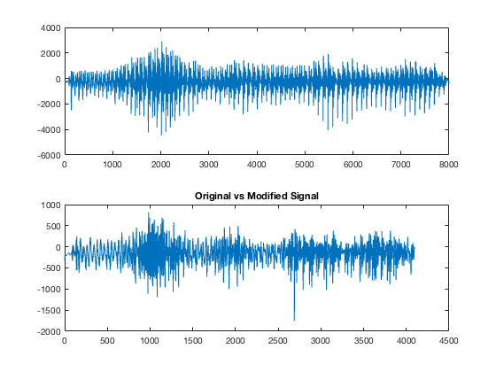

Contents
Part 1 - generating chirp and plotting spectrogram
N = 256;
fs = 5e6;
mu = 4e9;
t = (0:1/fs:200e-6);
chirp = cos(2*pi*mu*(t.^2));
window = triang(N);
spectrogram(chirp,window,255,N,'yaxis')

Part 2 - instantaneous frequency
figure
f1 = mu*t;
f2 = 2*mu*t;
w1 = f1*pi/fs;
w2 = f2*pi/fs;
plot(t,w1,t,w2);
title('Instantaneous Frequency Functions')
xlabel('t (s)')
ylabel('w (rad)')
legend('w1','w2')

Part 3 - new chirp rate
figure
mu2 = 1e10;
x2 = cos(2*pi*mu2*(t.^2));
spectrogram(x2,window,255,N,'yaxis')

Part 4 - narrowband spectrogram
fftlen = 256;
winlen = 16;
overlap = 15;
load('s1.mat');
load('s5.mat');
w = triang(winlen);
figure
subplot(2,1,1)
spectrogram(s1,w,overlap,fftlen,'yaxis')
subplot(2,1,2)
spectrogram(s5,w,overlap,fftlen,'yaxis')

Part 5 - wideband spectrogram
fftlen = 512;
winlen = 512;
overlap = 511;
w = triang(winlen);
figure
subplot(2,1,1)
spectrogram(s1,w,overlap,fftlen,'yaxis')
subplot(2,1,2)
spectrogram(s5,w,overlap,fftlen,'yaxis')

Part 6 - ISTFT
load('vowels.mat');
s1 = spectrogram(vowels,rectwin(256),128,1023);
s2 = flipud(s1);
s = [s1;s2];
y = invSTFT(s);
figure
subplot(2,1,1)
plot(vowels)
subplot(2,1,2)
plot(y)
title('Input vs Output Signal')

Part 7 - changing rate of speech
s = s.';
s = downsample(s,2);
s = s.';
y = invSTFT(s);
figure
subplot(2,1,1)
plot(vowels)
subplot(2,1,2)
plot(y)
title('Original vs Modified Signal')
